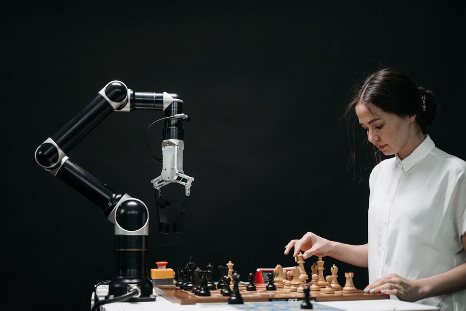

Have you ever wondered how a self-driving car navigates busy streets, or how a robotic arm in a factory can pick out a tiny component from a pile? It's not magic; it's the incredible power of Computer Vision! Just like our eyes allow us to see and understand the world around us, computer vision gives robots the ability to "see" and interpret their surroundings. This fascinating field is transforming robotics, opening up a universe of possibilities from exploring distant planets to helping out in our homes. Get ready to dive into how robots gain their sight and what incredible things they can do with it!
What is Computer Vision?
At its core, Computer Vision (CV) is a field of Artificial Intelligence (AI) that enables computers and robots to derive meaningful information from digital images, videos, and other visual inputs. Think of it as teaching a computer to process visual data just like the human brain does. It's not just about capturing an image; it's about understanding what's in that image: what objects are present, where they are, what they are doing, and even their relationships to each other.
From recognizing faces on your phone to guiding autonomous drones, computer vision is everywhere. For robotics, it's the crucial sense that allows machines to interact intelligently and safely with the physical world, moving beyond pre-programmed paths to dynamic, responsive actions.
Why Do Robots Need to "See"? The Power of Perception
Imagine trying to walk around your house blindfolded. It would be incredibly difficult, right? You'd bump into things, struggle to find objects, and generally be very inefficient. The same applies to robots. Without the ability to perceive their environment, robots are limited to performing repetitive tasks in highly controlled, static settings.
Computer vision grants robots the gift of perception, making them:
- Autonomous: Robots can navigate, avoid obstacles, and complete tasks without constant human intervention.
- Adaptive: They can respond to changes in their environment, such as moving objects or varying light conditions.
- Intelligent: By understanding what they see, robots can make informed decisions, like identifying a specific tool or recognizing a person.
- Safe: Vision systems allow robots to detect humans or other robots, preventing collisions and ensuring safer operations in shared spaces.
"The future of robotics isn't just about building stronger or faster machines; it's about building smarter ones that can understand and interact with our complex world. Computer vision is the key to unlocking that intelligence."
— A leading researcher in AI and Robotics
How Do Robots "See"? The Building Blocks of Computer Vision
The process of a robot "seeing" is a sophisticated journey from raw light to meaningful data. Let's break down the main steps:
Image Acquisition: The Robot's Eyes
Just like our eyes, robots use cameras to capture light from the environment. These can be various types:
- 2D Cameras (RGB): Standard cameras that capture color images (Red, Green, Blue channels).
- Depth Cameras (e.g., Intel RealSense, Microsoft Kinect): These don't just capture color but also measure the distance to objects, creating a 3D understanding of the scene.
- Infrared Cameras: Detect heat signatures, useful in low-light conditions or for specific industrial inspections.
The captured image is then converted into a digital format – a grid of pixels, each containing color and brightness information.
Image Processing: Making Sense of Pixels
Once an image is acquired, it's often too "noisy" or complex for direct interpretation. Image processing techniques are applied to enhance the image and extract useful features:
- Grayscale Conversion: Simplifying color images to black and white for easier processing.
- Noise Reduction: Removing unwanted speckles or distortions from the image.
- Edge Detection: Identifying the boundaries of objects, which are crucial for shape recognition.
- Feature Extraction: Locating unique points or patterns in an image that can be used for identification or tracking.
Object Detection and Recognition: What's That?
This is where the magic truly happens! After processing, algorithms are applied to identify and classify objects within the image:
- Object Detection: Drawing bounding boxes around specific objects (e.g., "This is a car," "That's a person").
- Object Recognition/Classification: Identifying what kind of object it is (e.g., "This is a red ball," "That's a specific type of wrench").
- Tracking: Following the movement of identified objects over time.
- Segmentation: Dividing an image into segments to represent different objects or regions, often down to the pixel level.
Modern object detection often relies heavily on Machine Learning and Deep Learning models, especially Convolutional Neural Networks (CNNs), which are trained on vast datasets of images to learn to recognize patterns.
Computer Vision in Action: Real-World Robotics Applications
Computer vision is revolutionizing almost every sector where robots are deployed:
Autonomous Navigation
This is perhaps the most visible application. Self-driving cars, delivery robots, and autonomous drones use computer vision to:
- Detect lane markings, traffic signs, and traffic lights.
- Identify other vehicles, pedestrians, and cyclists.
- Map their environment and localize themselves within that map.
- Avoid obstacles and plan safe paths.
Robotic Arms for Manufacturing and Logistics
In factories and warehouses, vision-guided robots perform precision tasks:
- Pick-and-Place: Robots can identify randomly placed items on a conveyor belt and precisely pick them up.
- Quality Control: Vision systems inspect products for defects, ensuring high standards.
- Assembly: Guiding robotic arms to accurately assemble complex components.
Service Robots and Human-Robot Interaction
Robots designed to interact with humans in daily life heavily rely on computer vision:
- Facial Recognition: Identifying people for personalized interactions or security.
- Gesture Recognition: Understanding human commands through hand movements.
- Social Robotics: Robots that can read human emotions through facial expressions and body language.
- Assistive Robotics: Helping people with disabilities by recognizing objects they need or understanding their environment.
Getting Started with Computer Vision for Robotics
Excited to try it yourself? The good news is that getting started with computer vision for robotics is more accessible than ever, especially with powerful open-source tools.
The go-to library for computer vision is OpenCV (Open Source Computer Vision Library), which supports multiple programming languages, with Python being a popular choice due to its simplicity and extensive community support.
Here's a simple Python code example using OpenCV to load an image, convert it to grayscale, and detect edges:
import cv2
import numpy as np
# 1. Load an image
# Make sure 'robot.jpg' is in the same directory as your script
# Or provide the full path to your image file
image_path = 'robot.jpg'
original_image = cv2.imread(image_path)
if original_image is None:
print(f"Error: Could not load image at {image_path}. Please check the path.")
else:
# 2. Convert to grayscale
gray_image = cv2.cvtColor(original_image, cv2.COLOR_BGR2GRAY)
# 3. Apply Canny edge detection
# The two numbers are threshold values for edge linking.
# Pixels with intensity gradient greater than max_threshold are sure to be edges.
# Pixels with intensity gradient less than min_threshold are sure to be non-edges.
# Pixels with intensity gradient between min_threshold and max_threshold are classified as edges
# if they are connected to sure-edge pixels.
edges = cv2.Canny(gray_image, 100, 200)
# 4. Display the images
cv2.imshow('Original Image', original_image)
cv2.imshow('Grayscale Image', gray_image)
cv2.imshow('Edge Detected Image', edges)
# 5. Wait for a key press and then close all windows
cv2.waitKey(0)
cv2.destroyAllWindows()
To run this code, you'll need to install OpenCV for Python (`pip install opencv-python`) and have an image file named `robot.jpg` in your script's directory. This simple example demonstrates how you can start manipulating images and extracting basic visual information – a fundamental step in building robot vision systems!
The Future is Bright: What's Next for Robot Vision
Computer vision for robotics is a rapidly evolving field. We can expect to see:
- More Robust AI Models: Even better accuracy and performance in complex, unpredictable environments.
- Real-time 3D Perception: Robots will gain an even deeper understanding of space and depth.
- Event-based Vision: New types of cameras that only record changes in light, leading to ultra-fast and energy-efficient vision systems.
- Explainable AI: Vision systems that can not only make decisions but also explain why they made them, increasing trust and safety.
As these technologies advance, robots will become even more integrated into our lives, performing tasks with unprecedented intelligence and adaptability.
Conclusion
Computer vision is truly the "eyes" of modern robotics, transforming machines from simple automatons into intelligent, perceptive entities. From navigating complex environments to performing delicate tasks, the ability for robots to "see" and understand their world is crucial for their evolution. As you continue your journey in STEM and robotics, exploring computer vision will open up a world of exciting possibilities and empower you to build the robots of tomorrow.
Ready to build your own vision-enabled robot? Start experimenting with OpenCV, explore different camera technologies, and join the MakerWorks community to share your projects and learn more!